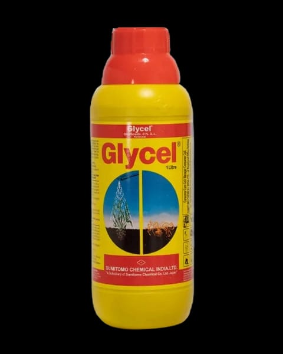

औषधाविषयी :
ग्लायसेल एक पद्धतशीर, विस्तृत-स्पेक्ट्रम, नॉन-सिलेक्टिव्ह पोस्ट-इमर्जंट तणनाशक आहे.
वार्षिक, बारमाही, गवताळ, रुंद पानांचे तण आणि शेंडे यासह सर्व तणांवर नियंत्रण ठेवण्यासाठी हे प्रभावी आहे.
प्रमाण:
2-3 लीटर/हेक्टर
टीप:
हे उत्पादन हे विष्युक्त असल्या मुळे याचा वापर करताना नेहमी मास्क वापरावा.
तांत्रिक सामग्री :
यामध्ये ग्लायफोसेट 41% SL हे केमिकल वापरले जाते.
वापर :
मुख्यतः हे औषध गवत नष्ट करण्यासाठी वापरले जाते
क्रियेची पद्धत:
ग्लायसेल मुख्यतः त्याच्या पानांद्वारे पण मऊ देठाच्या ऊतींद्वारे वनस्पतीमध्ये शोषून कार्य करते. त्यानंतर ते संपूर्ण वनस्पतीमध्ये वाहून नेले जाते जेथे ते वनस्पतींच्या वाढीसाठी आवश्यक असलेल्या शिकिमिक ऍसिड मार्ग म्हणून ओळखल्या जाणार्या अमीनो ऍसिड चयापचयला प्रतिबंध करणार्या विविध एन्झाइम प्रणालींवर कार्य करते.
ग्लायसेलसह हा मार्ग काही दिवस किंवा आठवड्यांच्या कालावधीत हळूहळू मरतो, आणि रसायन संपूर्ण वनस्पतीमध्ये वाहून जात असल्याने, कोणताही भाग टिकत नाही.